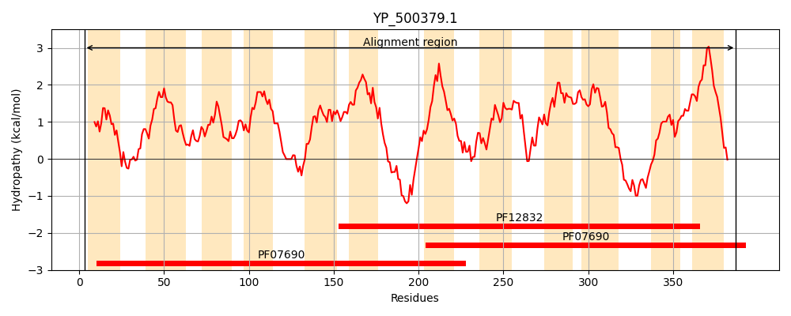
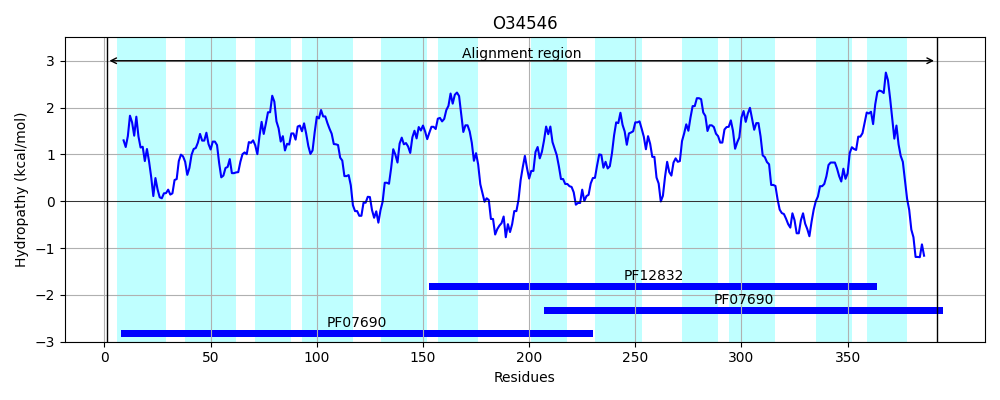
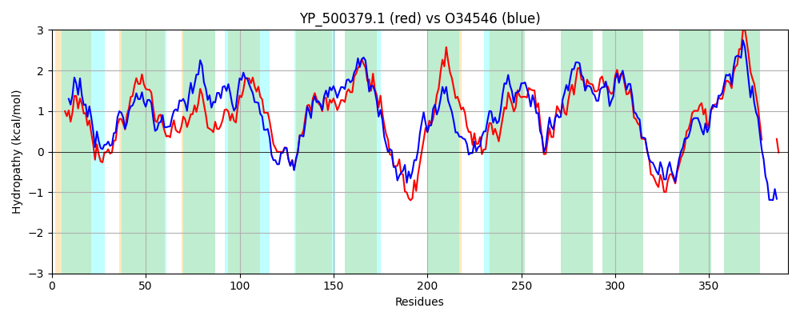

Hit Accession: O34546
Hit TCID: 2.A.1.2.69
Hit Description: gnl|BL_ORD_ID|7136 gnl|TC-DB|O34546|2.A.1.2.69 Uncharacterized MFS-type transporter yttB OS=Bacillus subtilis (strain 168) GN=yttB PE=3 SV=1
Mach Len: 392
e:0.000000
Query TMS Count : 12
Hit TMS Count: 12
TMS-Overlap Score: 11.600000
Predicted Substrates:None
BLAST Alignment:
Score: 1071 , Bit scores: 417 bits, E-value: 4.4e-145, Alignment length: 392, Percentage identity: 52
Query: 3 IPKSVWWLVIGMALNITGSSFLWPLNTIYMKQELGKSLTVAGLVLMINSFGMVIGNLLGGSLFDKLGGYKTILIGTFTCLCSTTLLNFFHGWPWYAVWLVMLGFGGGMIIPAIYAMAGAVWPNGGRQTFNAIYLAQNIGVAVGAAMGGFVAEFSFNYIFLANLIMYVVFALVAVTQFNIEINAKVKYPTHLDITGKKNKARFISLVLICAMFAICWVAYIQWESTIASFTQSINISMAQYSVLWTINGIMILVAQPLIKPILYLLKGNLKKQMFVGIIIFMLSFFVTSFAENFTIFVVGMIILTFGEMFVWPAVPTIANQLAPDGKQGQYQGFVNSAATVGKAFGPFLGGVLVDAFNMRMMFIGMMLLLVFALILLMVF-------KENNTQ 387
+P+++ LVIGM +N+TG+SFLWPLNTIY+ LGKSLTVAGLVLM+NS V GNL GG LFDK+GG+K+I++G L S L FFH WP Y V L ++GFG G++ PA YAMAG+VWP GGR+ FNAIY+AQN GVAVG+A+GG VA FSF+Y+FLAN ++Y++F + F + LD +KA+F +L+++ + + W+AY QW +TIAS+TQSI IS++ YSVLWT+NGI+I++ QPL+ ++ +LK QM +G IIF++SF + A+ F +F+ M+ILT GEM VWPAVPTIANQLAP GK+G YQGFVNSAAT G+ GP GGVLVD + +R + + +++LL+ ++ +++ KE N Q
Sbjct: 1 MPRALKILVIGMFINVTGASFLWPLNTIYIHNHLGKSLTVAGLVLMLNSGASVAGNLCGGFLFDKIGGFKSIMLGIAITLASLMGLVFFHDWPAYIVLLTIVGFGSGVVFPASYAMAGSVWPEGGRKAFNAIYVAQNAGVAVGSALGGVVASFSFSYVFLANAVLYLIFFFIVYFGFRNIQTGDASQTSVLDYDAVNSKAKFAALIILSGGYVLGWLAYSQWSTTIASYTQSIGISLSLYSVLWTVNGILIVLGQPLVSFVVKKWAESLKAQMVIGFIIFIVSFSMLLTAKQFPMFLAAMVILTIGEMLVWPAVPTIANQLAPKGKEGFYQGFVNSAATGGRMIGPLFGGVLVDHYGIRALVLSLLVLLLISIATTLLYDKRIKSAKETNKQ 392 | Protein Hydropathy Plots: |
|---|
|  |  |
Pairwise Alignment-Hydropathy Plot:
|
|---|
|  |